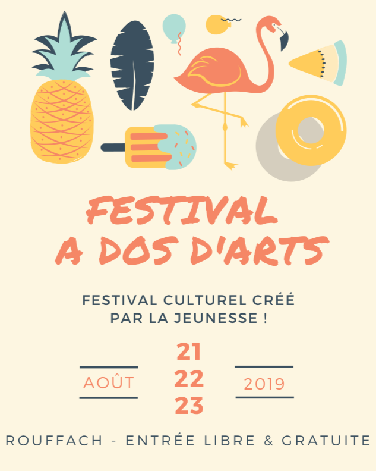
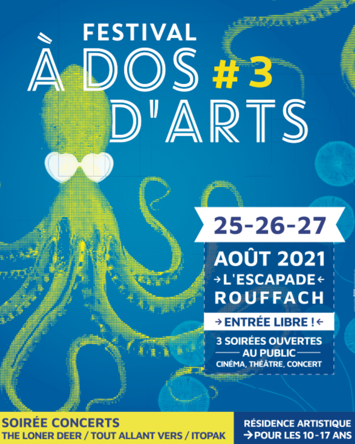
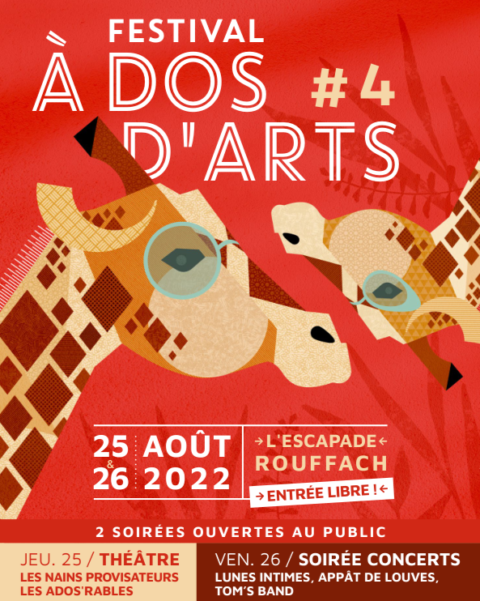
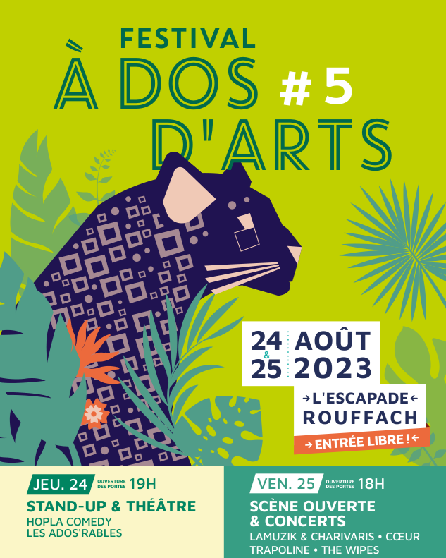
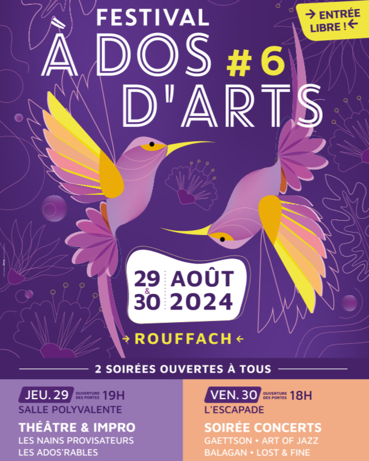
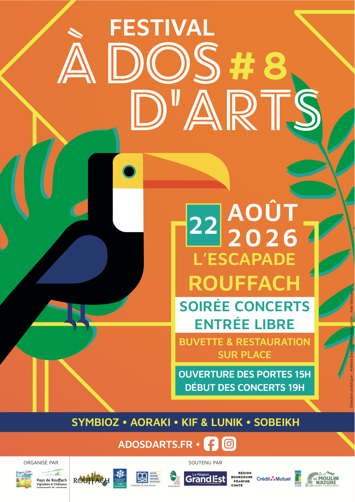

Soirée concerts & Scène ouverte · Entrée libre · 4 groupes, 2 scènes
Ouverture des portes dans
La soirée
4 concerts, 2 scènes
Quatre groupes s'enchaînent dès 19h pour clôturer l'été en musique.
La playlist du festival
Retrouve tous les artistes de cette édition dans une playlist à écouter en boucle avant le grand soir.
Chargement de la programmation…
Memories
8 éditions de souvenirs
Depuis 2019, le festival rythme la fin de l'été à Rouffach. Petit retour en images.






En images
Quelques instants des éditions passées, la galerie complète arrive bientôt.
Festival propre
Un déchet, ça se vise (et ça se trie)
À Dos d'Arts se déroule en plein air, au cœur de la nature de Rouffach. Pour que la fête reste belle, chaque mégot, gobelet ou emballage compte : un déchet laissé au sol met des mois — parfois des siècles — à disparaître, pollue les sols et menace la faune. La bonne nouvelle ? Le bon geste prend deux secondes : viser la poubelle, et déposer chaque déchet dans le bon bac.
Mettez un maximum de déchets dans la corbeille en 25 secondes ! Vous êtes face à la poubelle, un déchet en main. La distance change à chaque fois et un vent de travers tente de dévier votre lancer. Faites glisser (ou swipez sur mobile) vers le haut, en direction de la poubelle, pour lancer : plus le geste est ample, plus le lancer est puissant ; inclinez-le à gauche ou à droite pour compenser le vent. Chaque déchet bien rangé, c'est un de moins par terre.
Envie de donner un coup de main ?
Le festival vit grâce à ses bénévoles. Rejoignez l'aventure de la 8ᵉ édition.
Prêt à faire monter ton groupe sur nos planches ?
Vous faites de la musique et rêvez de jouer à À Dos d'Arts ? Proposez votre groupe pour une prochaine édition.
Ils rendent la soirée possible